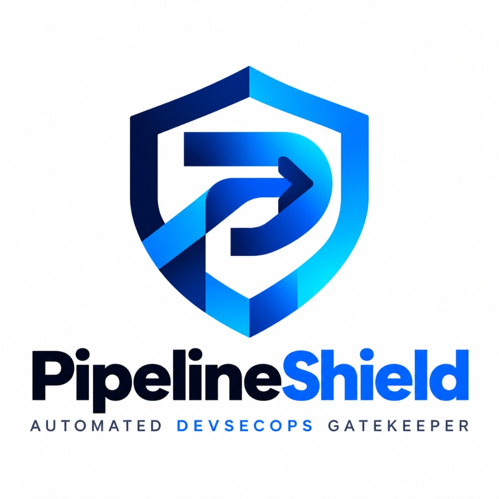

PipelineShield
Automated DevSecOps Gatekeeper
An automated DevSecOps gatekeeper providing policy-driven verification, deterministic gate decisions, and finding traceability for CI/CD pipelines.
What is PipelineShield?
Automated Security Verification & Policy Enforcement for Modern CI/CD Workflows
PipelineShield is an automated DevSecOps gatekeeper that helps teams check software changes for security issues before they are accepted into the development workflow.
Code Change
Developer creates or updates software code in the repository.
- Automated trigger on commit & pull request
- Initiates continuous security inspection
Security Checks
Automated security tools inspect submitted changes directly.
- Static code analysis for vulnerabilities & secrets
- Dependency & container manifest audits
Policy Evaluation
Findings are evaluated against configured project rules.
- Declarative policies in
config/policy.yaml - Severity thresholds & zero-tolerance checks
Gate Decision
An authoritative gate decision is produced before merge.
- Deterministic verdicts halting insecure merges
- Clear audit evidence and finding traceability
It brings security checks into the development pipeline and makes the gate decision visible.
Why is a DevSecOps Gatekeeper needed?
Addressing Tool Fragmentation, Inconsistent Evaluation, and Release Gate Ambiguity
Security checks can be difficult to apply consistently across a development workflow. Teams need a clear, repeatable way to evaluate findings and decide whether a change should pass or be blocked.
Scattered Checks
Security checks are scattered across fragmented tools and stages.
- Disparate scanners generate siloed, incompatible outputs
- Incomplete visibility introduces blind spots across repositories
Inconsistent Evaluation
Findings lack uniform evaluation against defined policies.
- Absence of centralized rules leads to subjective interpretations
- Severity thresholds vary across reviewers and pull requests
Ambiguous Gate Decisions
Developers lack clear, explainable gate decisions.
- Raw scanner dumps fail to provide decisive pass/block criteria
- Engineers lack precise file traces and actionable remediation
PipelineShield addresses this by bringing checks and policy-based decisions into one workflow.
What does PipelineShield aim to do?
Establishing Automated Verification, Deterministic Policy Arbitration, and Traceable Evidence
PipelineShield aims to embed continuous security governance into modern software delivery by fulfilling four core objectives across the development lifecycle.
Workflow Integration
Run security checks as part of the development workflow.
- Automated trigger on commits & pull requests
- Executes directly within the CI pipeline
Policy Evaluation
Evaluate findings against a defined policy.
- Structured rules in
config/policy.yaml - Severity thresholds & zero-tolerance limits
Clear Gate Decision
Produce a clear gate decision: PASS, WARN, or BLOCK.
- Deterministic verdicts with POSIX exit codes
- Authoritative merge gating before acceptance
Evidence Dashboard
Present findings and decision evidence in an understandable dashboard.
- Centralized console with file & line traces
- Traceable findings with audit evidence
Transforming raw security scan data into transparent, policy-enforced gate decisions.
How does PipelineShield work?
End-to-End Workflow: From Repository Change to Authoritative Gate Verdict and Evidence
Code Repository
Git PR / CommitPull request delta
→Security Checks
Raw scan telemetry
→Policy Evaluation
config/policy.yamlSeverity rules & limits
→Gate Decision
Binding CI exit code
→Dashboard & Evidence
Next.js ConsoleTraceable findings & logs
config/policy.yaml during CI execution.
Authoritative verdicts are decided strictly by policy and scanner evidence—advisory AI provides guidance but never determines release outcomes.
How is a change evaluated?
Deterministic Evaluation Pipeline: From Ingestion to Policy Evaluation and Dashboard Evidence
Change Ingestion
A code change enters the development workflow; pull requests or branch commits trigger the automated CI job.
Security Checks
Automated scanners (Trivy, Semgrep, and Dependency Review) execute directly against submitted code deltas.
Policy Evaluation
Findings are collected, normalized, and evaluated deterministically against rules in config/policy.yaml.
Gate Outcome
Produces an authoritative decision; binding POSIX exit codes govern branch merge eligibility in CI.
Evidence Dashboard
The Next.js console surfaces run findings, file traces, and audit logs with optional on-device AI advice.
Fail-Closed CI Enforcement
Executes deterministically in GitHub Actions; missing reports or schema anomalies fail closed to prevent unverified code merges.
Decoupled Advisory Assistant
On-device Ollama copilot assists developers by explaining findings, but is strictly decoupled and cannot alter authoritative CI verdicts.
A structured, five-stage methodology guarantees that every software change is audited uniformly before merge approval.
What has been implemented?
Overview of Confirmed Engineering Modules in the Repository
Scanner Integration & Collection
Automates ingestion of security telemetry from Trivy (vulnerabilities & secrets), Semgrep (SAST), and Dependency Review into a unified finding schema.
Policy Gate Engine
Evaluates findings against config/policy.yaml thresholds and zero-tolerance rules, computing authoritative PASS, WARN, or BLOCK verdicts.
CI Workflow Integration
Automated GitHub Actions enforcement (security-gate.yml) on PRs and commits, applying fail-closed execution with POSIX exit codes to block risky code merges.
Runs & Findings Dashboard
Centralized Next.js management console for run tracking and triage, clearly separating synthetic demonstration profiles from live CI telemetry.
Evidence & Traceability Drawer
Drill-down inspector surfacing exact file paths, line numbers, CWE classifications, scanner provenance, and audit logs for verifiable finding inspection.
Local AI Guidance Assistant
On-device Ollama copilot (qwen2.5:3b) providing plain-language remediation guidance; strictly decoupled from authoritative CI gate verdicts.
All six modules exist in the codebase: scanning, policy arbitration, and CI enforcement are authoritative, while AI assistance remains strictly advisory.
How was the system checked?
Verification Across Automated Tests, CI Pipelines, Demo Scenarios, and Defined Boundaries
Automated Unit & Contract Tests
pytest suites and contract tests verify scanner normalization, severity threshold counting, and data model consistency.
CI Security Gate Pipeline
GitHub Actions workflow executes live Trivy, Semgrep, and Dependency Review checks to enforce fail-closed merge blocking.
Synthetic Demonstration Scenarios
Evaluates 3 pre-computed test profiles (PASS, WARN, BLOCK). Clearly distinguished as offline demonstration data, not live telemetry.
External Scanner Dependency
Vulnerability detection relies entirely on installed scanner engines (Trivy, Semgrep) and their active rule coverage.
Advisory-Only Local AI
The on-device Ollama copilot (qwen2.5:3b) provides non-binding guidance and cannot alter authoritative CI verdicts.
Pre-Merge Static Scope
Inspection focuses strictly on source code, secrets, and package manifests before merge; dynamic testing (DAST) is out of scope.
Core policy and scanner logic is verified through automated test suites and reproducible demo scenarios, with clear operational boundaries separating authoritative CI from advisory assistance.
How did our team contribute?
Agreed Responsibility Allocation & Contribution Areas Across the Project Lifecycle
Rishvin Reddy
System Architecture & Integration
- Architecture and system integration
- Policy and gate logic
- Dashboard and evidence view
Guggilla Yogamruth Reddy
Scanner Configuration & Telemetry
- Scanner workflow configuration
- Scanner-output handling
- Validation scenarios and test cases
Lakshya Bamboli
Test Planning & Quality Review
- Test planning and execution
- Findings and evidence review
- Gate-outcome verification
Bhavi Mahnot
UI Design & Accessibility
- UI/UX and responsive layout
- Accessibility and visual clarity
- Project documentation
Chakradhar Muppuri
Navigation & Demo Preparation
- Findings navigation and user-flow checks
- Demo preparation and walkthrough
- Technical documentation support
Responsibilities reflect the agreed team division of labor across architecture, scanner orchestration, test execution, interface usability, and live demonstration.
From security checks to a clear gate decision
Unified DevSecOps Verification, Policy Arbitration, and Audit Evidence
PipelineShield brings security checks, policy evaluation, and the gate decision into one development workflow.
Policy Evaluation
Security findings are evaluated against a defined policy.
Configured severity rules, vulnerability limits, and zero-tolerance policies ensure consistent, repeatable evaluation.
Clear Gate Decision
The gate decision is presented clearly.
Produces unambiguous PASS, WARN, or BLOCK verdicts with exit codes that strictly control workflow progression.
Evidence Dashboard
The dashboard helps reviewers inspect findings and supporting evidence.
Traceable file locations, line numbers, CWE mappings, and audit history provide full inspection visibility.
Thank you
PipelineShield Comprehensive Viva Defense